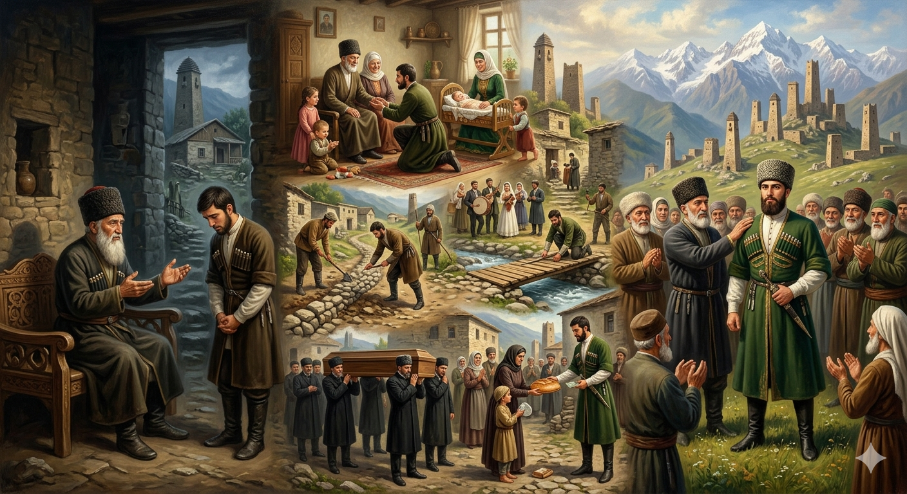

И.А. Дахкильгов. Хьехаме дувцарш - поучительные рассказы-притчи.
И.А. Дахкильгов. Хьехаме дувцарш - поучительные рассказы-притчи. Из ингушского фольклора.

Мишта доаккх къонахо мехка сий
Цхьа къонах вена хиннав зирак волча. Хаьттад цо: - Зирак, наха юкъе дукха сий долаш а дош отташ а вац со. Алал-хьей, фу де деза аз, мехко са сий дергдолаш? - ЦӀагӀа а хьай юрта а сий долаш вий хьо? - хаьттад зирака. - Ӏа яха кхы дукха сий а дац са цар. Иштта, цхьа моллагӀа волча сагага санна мара сога кхы хьахьажац, - аьннад къонахчо. - Воле, - аьннад зирака, - хьай цӀагӀеи юртеи сий хьалдаккха, тӀаккха со волча юхавоагӀаргва хьо. Мегад, аьнна, вахав къонах. ЦӀен кхоачонга хьожаш; даь-наьнага, берашка хьожаш; сесагаца дика волаш, дӀакхестав къонах. Юрта дика-во мел хиннача юрта отташ, мискашта сагӀа луш, юрта наькъаши тӀаьши тоадеча хьинаре дакъа лоацаш хиннав. "Хьанехк, хьанехк" оалаш, укхан цӀи хестае болабеннаб нах. Цун юртхой шоаш дика-во мел долча кхыча юрташка бахача, из къонах дикаца вувцаш, хеставеш хиннав цар. Иштта мехка цӀи дӀахезай цу сага. ТӀаккха юха а зирак волча ваха, аьннад цу къонахчо: - Ӏа яхар дир аз, юрта а дезала юкъе а сай сий хьалдаьккхар аз. Бакъда, хӀанз мехко а ду са сий. Мишта хиннад из? - Иштта хила а доагӀа, - аьннад зирако, - мехка ший сий хазийтар духьа къонахчо хьалхагӀа ший цӀагӀеи ший юртеи сий хьалдаккха деза. Харца алац вай кицо: "Дика а во а ший цӀагӀара, ший юртара хьадоагӀа".
РУССКИЙ
Как мужчине завоевать уважение в своей стране
Некий мужчина пришел к зираку (ведуну) и спросил его: - Ведун, я не имею веса среди людей, и меня мало кто почитает. Ответь, что мне надо сделать, чтобы я заслужил уважение всей нашей страны? - Скажи, чтут ли тебя дома и в твоем селе? - спросил ведун. - Я бы не сказал, что меня чтут в семье и в селе. Ко мне относятся как к обыкновенному человеку. - Иди, - сказал ведун, - и завоюй для начала честь и уважение в своей семье и в своем селе, а потом придешь ко мне. Мужчина начал вовсю трудиться для семьи, прилежно ухаживать за родителями и присматривать за детьми. Стал уважительно относиться к жене. Во всех сельских делах он принимал самое горячее участие, бывал на всех похоронах и свадьбах, чинил дороги и мосты. Бедным он раздавал милостыню. О нем стали говорить: "Какой замечательный мужчина!". Его односельчане, уходя в другие места по разным делам, там хвалили его. Постепенно имя мужчины стало известно повсеместно. Вновь пошел он к ведуну и сказал: - Я сделал так, как ты сказал. Добился уважения в семье и в селе, но получилось, что я стал в чести повсеместно в нашей стране. Как это произошло? На этот вопрос ведун ему ответил: - Чтобы добиться чести и уважения в своей стране, мужчина должен сначала добиться их в своей семье и в своем селе. Верно молвит наша пословица: "Все хорошее и все плохое идут из дома, идут из села".
ENGLISH
How a man can earn respect in his own country
A man went to see a zirak (shaman) and asked him: 'Shaman, I carry no weight amongst people, and few hold me in high regard. Tell me, what must I do to earn the respect of our entire country?' 'Tell me,' asked the sorcerer, 'are you respected at home and in your village?' 'I wouldn't say I'm respected by my family or in the village. I'm treated just like any ordinary person.' 'Go,' said the sorcerer, 'and first earn honour and respect within your family and in your village, and then come back to me.' The man began to work tirelessly for his family, diligently caring for his parents and looking after his children. He began to treat his wife with respect. He took an active part in all village affairs, attended every funeral and wedding, and repaired roads and bridges. He gave alms to the poor. People began to say of him: 'What a wonderful man!' His fellow villagers, when travelling to other places on various errands, would praise him wherever they went. Gradually, the man's name became known far and wide. He went to the wise man again and said: 'I did as you told me. I have earned respect within my family and in the village, but it turns out that I have come to be held in high esteem throughout our country. How did this happen?' To this question, the wise man replied: 'To earn honour and respect in one's country, a man must first earn them within his own family and in his own village.' As our proverb rightly says: 'All that is good and all that is bad comes from home, comes from the village.'
НОХЧИЙН
ПОГОВОРКИ
Воча сагах оал: “ЦӀагӀа бала ба хьо, пхьегий тӀа белам ба хьо”. Про плохого мужчину говорят: “Дома – ты горе, на людях – посмешище”.Дезала вийзар Даллана а вийзав. Кого любит семья, того и бог любит.Дезала ца вийзар наха вийзавац. Кого не любят в семье, того и в народе не любят.Кхуврчара – белхам, пхьегӀа тӀа – белхам. У домашнего очага ты горе, а при народе ты посмещище (о плохом хозяине).МаӀача сага мах ха безам бале, кхалсагага (сесагага) хатта. Хочешь узнать цену кого-то из мужчин – спроси о нем у женщины (жены).Мехко дер ца дечун беркат хиннадац. Несчастлив тот, кто в делах и мыслях не со своей страною.Нахана вийзар Даллана а вийзав. Кого любят люди, того любит и бог Дяла.Нахаца барта воацар – саг вац. Тот не человек, кто не заодно со своим народом.Нахаца та ца ховр ший цӀагӀарчарна а гоама ва. Не уживающегося с людьми и в родном доме не любят.Ший дезала да воацачох мехка да хиннавац. Хозяином страны не станет тот, кто не является хозяином в своем доме.Шийна воацар наха вац, хӀаьта шийна а наха а воацар мехка вац. Кто ни себе, тот и не людям; кто ни себе, и ни людям, тот и не для страны.Эггар эсалагӀа вола фусам-да а паччахь ва ший цӀагӀа. Самый никудышный хозяин – и тот царь в своем доме.